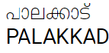

Palakkad is one of the fourteen districts of Kerala and has no coastal line. The district opens the state to the rest of the country through the Palakkad Gap with a width of 32 to 40 Kms. Its geographical position, historical background, educational status, tourism hot-spots and above all, the development activities that are carried out, are wide and varied. The district is one of the main granaries of Kerala and its economy is primarily agricultural. The district is also the land of Palmyrahs. The district is headed by the District Collector and seated at Collectorate, Civil Station, Palakkad. The District Collector exercises control over the various offices in the district and staff attached to the Collectorate. For the maintenance of the law and order, the District Police Chief assists the District Collector. The District Panchayat President assists the District Collector for the planning and execution of the development programmes for the district.